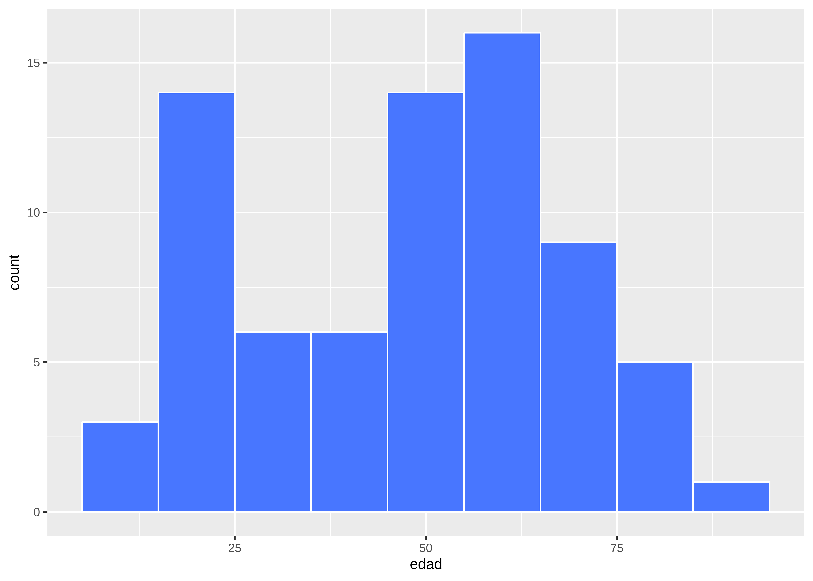
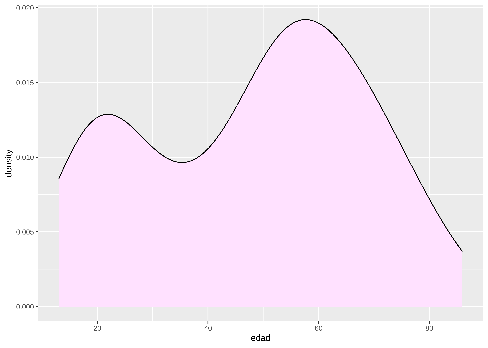
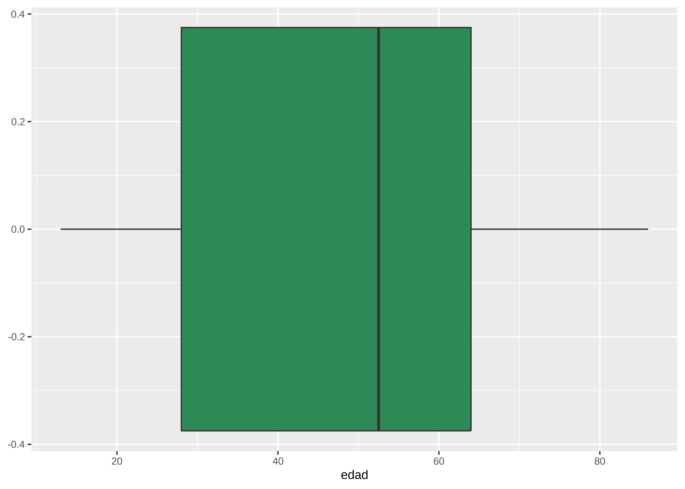
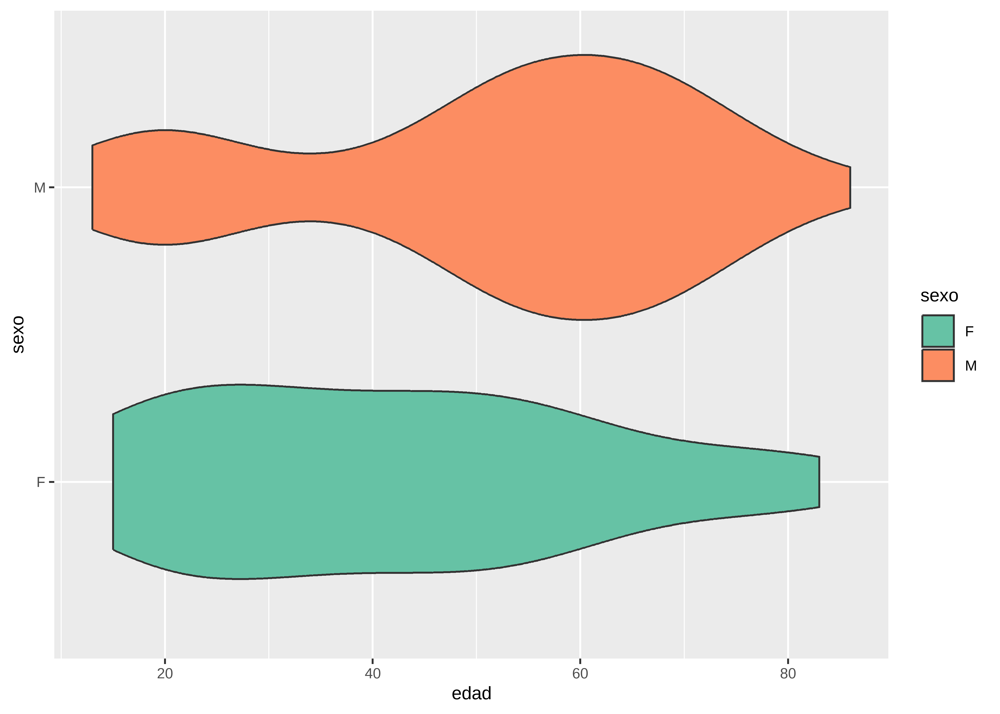
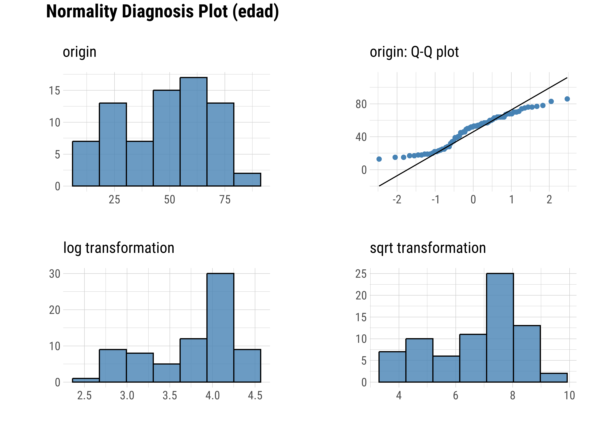
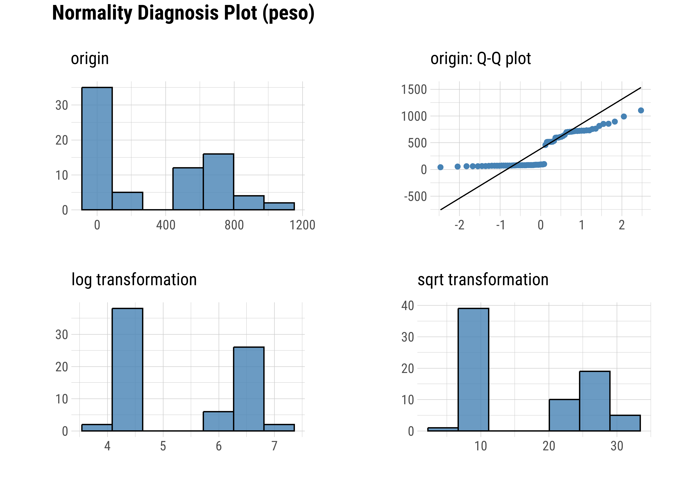
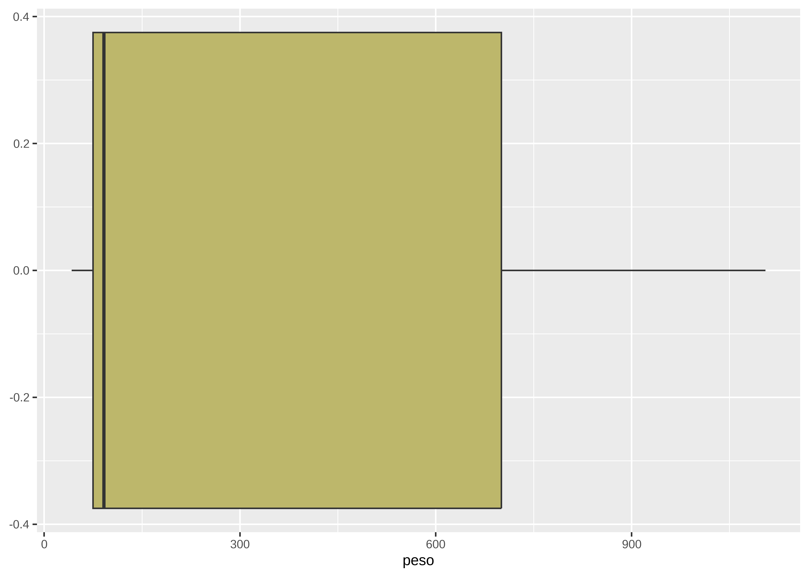
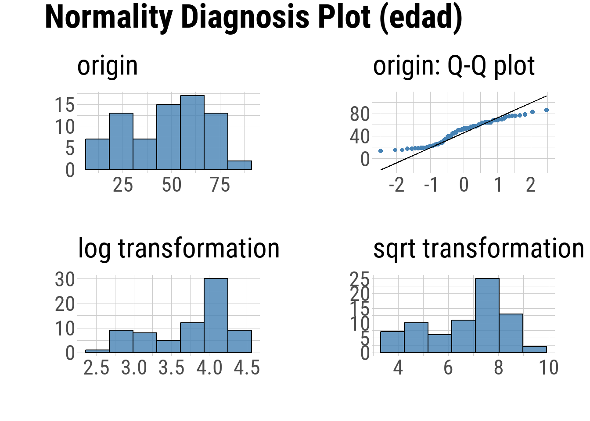
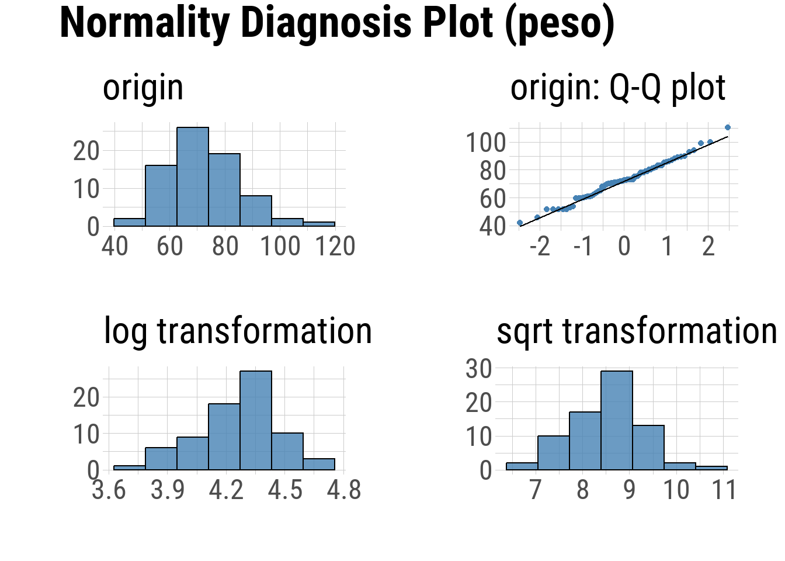
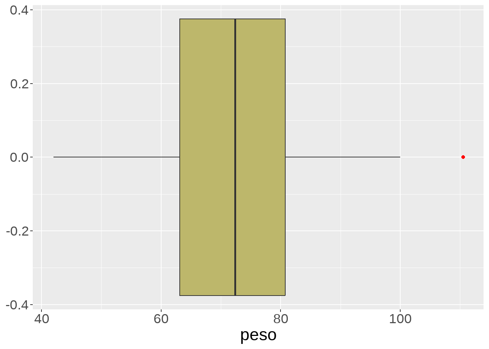

install.packages(c("tidyverse", "skimr", "janitor", "dlookr"))Análisis exploratorio de datos (EDA)
© 2025 Instituto Nacional de Epidemiología “Dr. Juan H. Jara” (ANLIS) - CC BY-NC 4.0


EDA
El análisis exploratorio de datos (conocido como EDA, su sigla en inglés) es un enfoque de análisis de datos para resumir y visualizar las características importantes de un conjunto de datos.
John Tukey, estadístico estadounidense, fue el principal propulsor contribuyendo de manera significativa al desarrollo del análisis exploratorio de datos al publicar, en 1977, su libro que lleva ese nombre donde entre otras cosas introdujo el gráfico boxplot (diagrama de caja y bigotes).
En términos simples, antes de avanzar con la etapa analítica y de construir modelos estadísticos, es relevante explorar, conocer y describir las variables de interés en nuestra tabla de datos.
Los principales objetivos perseguidos por EDA son:
- Conocer la estructura de la tabla de datos y sus tipos de variable
- Detectar observaciones incompletas (valores missing)
- Conocer la distribución de las variables de interés a partir de:
- Resumir datos mediante estadísticos
- Resumir datos mediante gráficos
- Detectar valores atípicos (outlier)
Aclaración: En este documento mostraremos funciones del lenguaje R que se pueden aplicar en este proceso basadas en la filosofía tidyverse. También aplicaremos otros paquetes diseñados para tareas específicas que le serán de mucha utilidad. Esto no quiere decir que no se pueda hacer la misma exploración con funciones del R base pero el ecosistema facilita el entendimiento de lo que estamos haciendo.
Presentaremos estas diferentes funciones de distintos paquetes que pueden servir en cada etapa de un EDA. Los paquetes con los que trabajaremos son:
- tidyverse
- skimr
- dlookr
- janitor
Para instalarlos puede copiar y ejecutar el siguiente código:
Nota: Algunos paquetes, entre estos dlookr, pueden ocasionar un falso positivo en la detección del antivirus durante el proceso de instalación. Sugerimos que desactive momentáneamente su antivirus para instalarlo sin inconvenientes.
Una vez instalados los podemos activar:
library(tidyverse)
library(skimr)
library(janitor)
library(dlookr)Cabe aclarar que no existe un solo camino y/o función del lenguaje para obtener la información requerida y que esta selección de paquetes puede cambiarse y ampliarse según la conveniencia del usuario. Es decir, aquellxs estudiantes que ya utilicen R y estén familiarizados con funciones y/o paquetes que realicen la misma tarea pueden seguir usándolos.
Con el fin de ejemplificar este análisis exploratorio vamos a utilizar un archivo con datos ficticios y variables de distinto tipo.
Conocer la estructura de la tabla de datos y sus tipos de variable
El primer paso en la exploración de un conjunto de datos es conocer su estructura y tamaño.
El tamaño está definido por la cantidad de observaciones (filas) y la cantidad de variables (columnas).
Llamamos estructura a la forma en se organizan sus variables, sus tipos de datos y sus categorías/valores.
La función glimpse() del tidyverse le da un vistazo a los datos:
glimpse(datos)Rows: 74
Columns: 7
$ id <int> 1, 2, 3, 4, 5, 6, 7, 8, 9, 10, 11, 12, 13, 14, 15, 16, 17, 18,…
$ sexo <chr> "M", "M", "M", "M", "M", "M", "M", "M", NA, "F", "F", "M", "F"…
$ edad <dbl> 76, 68, 50, 49, 51, 68, 70, 64, 60, 57, 83, 76, 27, 34, 17, 45…
$ peso <dbl> 71.0, 71.0, 79.0, 71.0, 87.0, 75.0, 80.0, 83.0, 69.0, 73.0, 60…
$ talla <dbl> 167.0, 164.0, 164.0, 164.0, 167.5, 170.0, 166.0, 160.0, 160.0,…
$ trabaja <lgl> FALSE, FALSE, FALSE, TRUE, TRUE, FALSE, NA, TRUE, TRUE, TRUE, …
$ fecha <date> 2020-10-20, 2020-10-20, 2020-10-20, 2020-11-05, 2020-11-05, 2…Nos informa que la tabla tiene 74 observaciones, 7 variables con su tipo de dato y los primeros valores de cada una al lado.
Los tipos de datos que nos podemos encontrar son:
- int (integer): números enteros
- dbl (double): números reales
- lgl (logical): valores lógicos
- chr (character): caracteres (texto)
- Date: fechas
- fct (factor): factores
- dttm (date-time): fechas y horas
Esta exploración inicial de la estructura generalmente viene acompañada por el “diccionario de datos” asociado a la tabla de datos, ya sea que esta tabla provenga de un proyecto de investigación propio (fuente primaria) o producto de una fuente secundaria.
En algunas situaciones el tipo de dato del dato coincidirá con la clasificación de la variable (por ejemplo, que sea numérica -dbl- para variables cuantitativas continuas) pero en otros casos podemos tener variables codificadas donde el dato es numérico pero representa una categoría de una variable cualitativa (por ejemplo, si a una variable de respuesta Si - No, la codificamos como 1 y 0).
Detectar observaciones incompletas (valores missing)
Sabemos que los valores perdidos o faltantes (conocidos en inglés como missing), que se gestionan en R mediante el valor especial reservado NA, constituyen un serio problema en nuestras variables de análisis.
Existen numerosos libros sobre como tratarlos y sobre diversos algoritmos de imputación que no vamos a incluir en este curso.
Sólo vamos a enfocarnos en como podemos utilizar algunas funciones de R para detectarlos, contabilizarlos y en algunas situaciones excluirlos.
Cada vez que ejecutemos un count() a una variable nos informará, al final de la tabla de salida, la cantidad de valores NA.
datos %>%
count(trabaja) trabaja n
1 FALSE 26
2 TRUE 39
3 NA 9Mucho mejor es la función find_na() que proviene del paquete dlookr:
find_na(datos, rate = T) id sexo edad peso talla trabaja fecha
0.000 4.054 0.000 0.000 0.000 12.162 0.000 Podemos aplicarla a todo el dataframe y nos dice que porcentaje de valores NA hay en cada variable. En este ejemplo la variable sexo tiene alrededor de un 4 % de valores faltantes y trabaja un poco más de 12 %.
Estos porcentajes, siempre y cuando los NA sean el resultado de la falta de dato, nos hará decidir si una variable es apropiada para incluirla en un análisis y/o si conviene excluir observaciones con esa situación.
El mismo paquete trae una función gráfica llamada plot_na_pareto()
plot_na_pareto(datos, only_na = T) # solo mostramos las variables con NA
Algo mas completo se logra con diagnose() (también de dlookr) que diagnostica la calidad de las variables.
diagnose(datos)# A tibble: 7 × 6
variables types missing_count missing_percent unique_count unique_rate
<chr> <chr> <int> <dbl> <int> <dbl>
1 id integer 0 0 74 1
2 sexo character 3 4.05 3 0.0405
3 edad numeric 0 0 45 0.608
4 peso numeric 0 0 56 0.757
5 talla numeric 0 0 38 0.514
6 trabaja logical 9 12.2 3 0.0405
7 fecha Date 0 0 11 0.149 Conocer la distribución de las variables de interés
Resumir variables cuantitativas mediante estadísticos
La instalación básica de R tiene incorporadas muchas funciones estadísticas con las cuales calcular medidas resumen de variables cuantitativas que podemos incluir dentro de los resúmenes de tidyverse.
Medidas de tendencia central
Estas medidas son parte de las medidas de posición o localización, pero tiene la intención de resumir la información en torno a un valor central, respecto al cual parece agruparse de un modo más o menos concentrado la distribución de los demás valores.
datos %>%
summarise(media = mean(edad),
mediana = median(edad)) # mediana media mediana
1 48.06757 52.5En cambio, no hay ninguna función base que calcule la moda. Tendremos que escribir una forma de cálculo o bien buscar y activar algún paquete extra de las numerosas librerías que tiene el lenguaje R que la tenga implementada.
Medidas de posición
Las medidas de posición dividen un conjunto de datos en grupos con el mismo número de individuos. Entre los más utilizados tenemos los cuartiles y percentiles.
Por ejemplo, con la función quantile(), del paquete stats, calculamos los cuartiles Q1 y Q3.
Indicamos como argumento los valores 0.25 y 0.75.
datos %>%
summarise(cuartil1 = quantile(edad, probs = 0.25),
cuartil3 = quantile(edad, probs = 0.75)) cuartil1 cuartil3
1 28 64Si queremos obtener el mínimo y máximo de este conjunto de valores numéricos podemos hacerlo con:
datos %>%
summarise(minimo = min(edad),
maximo = max(edad)) minimo maximo
1 13 86Medidas de dispersión
Cuando intentamos saber que tan dispersos están los valores o que tan variables son los datos dentro del conjunto de datos, usamos estadísticos de dispersión.
Los clásicos conocidos como la varianza - var() y el desvío estándar – sd() se pueden aplicar directamente al summarise().
datos %>%
summarise(varianza = var(edad),
desvio = sd(edad)) varianza desvio
1 404.8036 20.11973También se puede calcular el rango y el rango intercuartílico.
Para el primero debemos hacer la diferencia entre el máximo y el mínimo, en cambio para el RIC se usa la función IQR() que devuelve el rango entre el tercer y el primer cuartil de una distribución.
datos %>%
summarise(rango = max(edad)-min(edad),
ric = IQR(edad)) rango ric
1 73 36En dlookr tenemos la función describe() dedicada a describir variables numéricas.
describe(datos, -id) | described_variables | n | na | mean | sd | se_mean | IQR | skewness | kurtosis | p00 | p01 | p05 | p10 | p20 | p25 | p30 | p40 | p50 | p60 | p70 | p75 | p80 | p90 | p95 | p99 | p100 |
|---|---|---|---|---|---|---|---|---|---|---|---|---|---|---|---|---|---|---|---|---|---|---|---|---|---|
| edad | 74 | 0 | 48.07 | 20.12 | 2.34 | 36.00 | -0.21 | -1.11 | 13 | 14.46 | 17.00 | 19.00 | 24.6 | 28.0 | 34.9 | 46.00 | 52.50 | 56.00 | 61.2 | 64.00 | 65.2 | 73.10 | 76.35 | 83.81 | 86.0 |
| peso | 74 | 0 | 72.49 | 13.23 | 1.54 | 17.65 | 0.14 | 0.21 | 42 | 44.77 | 51.56 | 53.18 | 61.0 | 63.1 | 67.7 | 70.68 | 72.35 | 74.64 | 79.0 | 80.75 | 83.0 | 88.70 | 93.35 | 102.83 | 110.5 |
| talla | 74 | 0 | 164.85 | 8.12 | 0.94 | 9.75 | 0.26 | 0.04 | 148 | 148.73 | 150.32 | 155.00 | 158.9 | 160.0 | 161.0 | 163.00 | 164.00 | 166.00 | 168.1 | 169.75 | 171.4 | 176.25 | 178.35 | 184.27 | 185.0 |
Observemos que se puede aplicar sobre la tabla de datos completa. La propia función seleccionará las variables numéricas, pero con -id le estamos indicando que no tome en cuenta la variable id (el identificador es una variable que no tiene sentido analizar estadísticamente).
Los resultados comprenden: observaciones con datos, observaciones con valores NA, media, desvío estandar, error de la media, intervalo intercuartílico, medidas de forma como la simetría (skewness) y la curtosis (kurtosis) y los quintiles (incluye la mediana p50 y los cuartiles p25-p75).
Resumir variables cualitativas mediante estadísticos
Las variables cualitativas o categóricas pueden encontrarse bajo el tipo de dato character o factor. Ocasionalmente vamos a necesitar que las variables se encuentren bajo este último formato que el lenguaje R reserva para efectuar algunos procedimientos con estas variables.
Frecuencias y tablas de contingencia
Podemos resumir individualmente variables de tipo cualitativo mediante las frecuencias absolutas y relativas de sus categorías.
count() nos muestra el conteo absoluto de las diferentes categorías de la variable.
datos %>%
count(sexo) sexo n
1 F 27
2 M 44
3 <NA> 3En la salida, además de las categorías explícitas, aparece el valor NA con un conteo de 3 observaciones.
Tener en cuenta o no los valores faltantes es una decisión propia del que conduce el análisis y puede cambiar dependiendo de los objetivos buscados.
Una forma de evitarlos con count() es utilizar luego la función drop_na().
datos %>%
count(sexo) %>%
drop_na() # saltea los valores NA sexo n
1 F 27
2 M 44Obtenemos frecuencias relativas porcentuales así:
datos %>%
count(sexo) %>%
drop_na() %>%
mutate(porc = 100*n/sum(n)) sexo n porc
1 F 27 38.02817
2 M 44 61.97183Redondeamos el valor del porcentaje con round().
datos %>%
count(sexo) %>%
drop_na() %>%
mutate(porc = 100*n/sum(n),
porc = round(porc, digits = 2)) sexo n porc
1 F 27 38.03
2 M 44 61.97Una opción más completa es utilizar funciones del paquete janitor como tabyl():
datos %>%
tabyl(sexo) sexo n percent valid_percent
F 27 0.36486486 0.3802817
M 44 0.59459459 0.6197183
<NA> 3 0.04054054 NACalcula las frecuencias relativas incluyendo y no incluyendo los valores NA (porcentaje de valores válidos).
Podemos modificar sus argumentos y asociar otras funciones del paquete mediante tuberías para obtener mejores resultados (es compatible con tidyverse).
datos %>%
tabyl(sexo, show_na = F) %>% # anulamos valores na
adorn_totals(where = "row") %>% # agregamos totales
adorn_pct_formatting(digits = 2) # porcentaje con dos decimales sexo n percent
F 27 38.03%
M 44 61.97%
Total 71 100.00%Tablas de contingencia
La forma más adecuada de describir la relación entre dos variables categóricas es a partir de la construcción de una tabla de contingencia. Para ello se introduce en cada fila de la tabla las categorías de una de las variables y las categorías de la otra variable se asocian a cada una de las columnas de la tabla, en cada celda de la tabla aparecerá el número de observaciones correspondientes a la combinación oportuna de ambas variables.
Con la misma función tabyl() se puede realizar una tabla de contingencia, incluyendo a la variable trabaja (aunque tenga formato lógico puede utilizarse igual si conceptualmente la variable es categórica):
datos %>%
tabyl(sexo, trabaja) sexo FALSE TRUE NA_
F 8 15 4
M 17 22 5
<NA> 1 2 0Recordemos que en orden dentro de los paréntesis de la función es igual al de los índices, el primer argumento es la variable que aparecerá en las filas y el segundo la variable de las columnas. Por ese motivo, en la tabla de contingencia absoluta tenemos el sexo en las filas y a trabaja en las columnas.
Se puede mejorar sin valores NA y agregando totales:
datos %>%
tabyl(sexo, trabaja, show_na = F) %>%
adorn_totals(where = "row") sexo FALSE TRUE
F 8 15
M 17 22
Total 25 37Calculamos frecuencias relativas porcentuales por columna:
datos %>%
tabyl(sexo, trabaja, show_na = F) %>%
adorn_totals(where = "row") %>%
adorn_percentages(denominator = "col") %>% # % por columna
adorn_pct_formatting(digits = 2) # redondea con 2 decimales sexo FALSE TRUE
F 32.00% 40.54%
M 68.00% 59.46%
Total 100.00% 100.00%Calculamos frecuencias relativas porcentuales por fila:
datos %>%
tabyl(sexo, trabaja, show_na = F) %>%
adorn_totals(where = "col") %>%
adorn_percentages(denominator = "row") %>% # % por fila
adorn_pct_formatting(digits = 2) # redondea con 2 decimales sexo FALSE TRUE Total
F 34.78% 65.22% 100.00%
M 43.59% 56.41% 100.00%Cambiando el argumento denominator de adorn_percentages() a “all” se calculan relativas al total.
datos %>%
tabyl(sexo, trabaja, show_na = F) %>%
adorn_totals(where = "col") %>%
adorn_percentages(denominator = "all") %>% # % por total
adorn_pct_formatting(digits = 2) # redondea con 2 decimales sexo FALSE TRUE Total
F 12.90% 24.19% 37.10%
M 27.42% 35.48% 62.90%Explorar variables mediante gráficos
Uno de los aportes más relevantes de Tukey respecto al análisis es el uso de los gráficos cómo método exploratorio.
Los gráficos básicos más útiles que muestran la distribución univariada de variables que podemos hacer con R son:
- variables cuantitativas: histogramas, densidad, boxplot y violinplot.
- variables cualitativas: barras
Cuando interviene más de una variable aparecen comúnmente los puntos, las líneas y los gráficos de mosaico.
El lenguaje R soporta una serie de sistemas gráficos asociados a paquetes como graphics, lattice, ggplot2, etc. que sirven de base incluso para otros paquetes con funciones más específicas. Actualmente el estándar gráfico en R es ggplot2.
En el documento referido a tidyverse explicamos el funcionamiento de ggplot2 y sus capas gráficas.
Ahora sólo ejecutaremos los distintos elementos geométricos para representar los diferentes gráficos mencionados.
Barras en univariado

Barras en bivariado - posición stack

Barras en bivariado - posición dodge

Barras en bivariado - posición fill

Histograma

Densidad

Boxplot

Violinplot

Q-Q Plot
Los Q-Q Plot (Cuantil-Cuantil) son gráficos especiales que permiten observar cuan cerca está la distribución de un conjunto de datos a alguna distribución ideal o comparar la distribución de dos conjuntos de datos.
Suele usarse como método gráfico para analizar “normalidad”, es decir cuanto se asemeja la distribución de la variable a la distribución normal (“gaussiana”).
La función plot_normality() de dlookr muestra un diagnóstico gráfico de normalidad de una variable usando histogramas y Q-Q plot. Además muestra otros histogramas con conversiones de datos (logarítmico y raíz cuadrada por defecto, pero también “Box-Cox” y otras)
Sobre la variable edad:
datos %>%
plot_normality(edad)
Sobre la variable peso:
datos %>%
plot_normality(peso)
En la comparación podemos decir que los puntos se desarrollan mas cercanos a la línea teórica normal para la variable peso que para la variable edad.
Estos gráficos siempre se analizan acompañados por test de bondad de ajuste específicos de normalidad que veremos en la unidad 2.
Detectar valores atípicos (outlier)
Un valor atípico (en inglés outlier) es una observación que está numéricamente distante del resto de los datos.
Los outliers pueden deberse a:
- Errores de carga o procedimiento (se deben reparar)
- Valores extremos posibles (hay que evaluarlos)
- Acontecimientos extraordinarios o causas desconocidas (suelen eliminarse)
Estos valores desproporcionados pueden conducir a interpretar erróneamente algunos estadísticos como la media, ya que los distorsionan.
Una forma habitual de detección es mediante los gráficos boxplot.
Veamos el ejemplo con la variable peso donde existe un valor considerado atípico en el extremo superior de la distribución (punto rojo):

Coincide con el valor máximo de 110.5 kgrs.
Dentro de los paquetes incluidos en este documento la función diagnose_outlier() de dlookr esta pensada para la detección de datos atípicos.
diagnose_outlier(datos) variables outliers_cnt outliers_ratio outliers_mean with_mean without_mean
1 id 0 0.000000 NaN 37.50000 37.50000
2 edad 0 0.000000 NaN 48.06757 48.06757
3 peso 1 1.351351 110.5 72.48649 71.96575
4 talla 0 0.000000 NaN 164.85135 164.85135Se puede aplicar a todo el conjunto de datos y nos devuelve una tabla con la cantidad de outliers detectados por variable, la proporción, la media considerando estos valores y la media sin considerarlos.
En función de estos dos estadísticos se puede comparar el efecto de los valores atípicos en la media.
skimr
Finalmente una función interesante por lo sencillo de su uso es skim() de skimr.
skim(datos)| skim_type | skim_variable | n_missing | complete_rate | Date.min | Date.max | Date.median | Date.n_unique | character.min | character.max | character.empty | character.n_unique | character.whitespace | logical.mean | logical.count | numeric.mean | numeric.sd | numeric.p0 | numeric.p25 | numeric.p50 | numeric.p75 | numeric.p100 |
|---|---|---|---|---|---|---|---|---|---|---|---|---|---|---|---|---|---|---|---|---|---|
| Date | fecha | 0 | 1.0000000 | 2020-10-20 | 2020-12-15 | 2020-11-11 | 11 | NA | NA | NA | NA | NA | NA | NA | NA | NA | NA | NA | NA | NA | NA |
| character | sexo | 3 | 0.9594595 | NA | NA | NA | NA | 1 | 1 | 0 | 2 | 0 | NA | NA | NA | NA | NA | NA | NA | NA | NA |
| logical | trabaja | 9 | 0.8783784 | NA | NA | NA | NA | NA | NA | NA | NA | NA | 0.6 | TRU: 39, FAL: 26 | NA | NA | NA | NA | NA | NA | NA |
| numeric | id | 0 | 1.0000000 | NA | NA | NA | NA | NA | NA | NA | NA | NA | NA | NA | 37.50000 | 21.505813 | 1 | 19.25 | 37.50 | 55.75 | 74.0 |
| numeric | edad | 0 | 1.0000000 | NA | NA | NA | NA | NA | NA | NA | NA | NA | NA | NA | 48.06757 | 20.119731 | 13 | 28.00 | 52.50 | 64.00 | 86.0 |
| numeric | peso | 0 | 1.0000000 | NA | NA | NA | NA | NA | NA | NA | NA | NA | NA | NA | 72.48649 | 13.231918 | 42 | 63.10 | 72.35 | 80.75 | 110.5 |
| numeric | talla | 0 | 1.0000000 | NA | NA | NA | NA | NA | NA | NA | NA | NA | NA | NA | 164.85135 | 8.120551 | 148 | 160.00 | 164.00 | 169.75 | 185.0 |
Muestra en una tabla características y estadísticos descriptivos de las variables del dataframe y se puede combinar dentro de estructuras tidyverse con tuberías.
datos %>%
drop_na(sexo) %>%
group_by(sexo) %>%
select(where(is.numeric), -id) %>% # solo variables numéricas - id
skim()| skim_type | skim_variable | sexo | n_missing | complete_rate | numeric.mean | numeric.sd | numeric.p0 | numeric.p25 | numeric.p50 | numeric.p75 | numeric.p100 |
|---|---|---|---|---|---|---|---|---|---|---|---|
| numeric | edad | F | 0 | 1 | 41.88889 | 19.641662 | 15.0 | 26.00 | 39.0 | 54.50 | 83.0 |
| numeric | edad | M | 0 | 1 | 51.59091 | 19.558283 | 13.0 | 40.75 | 55.5 | 64.75 | 86.0 |
| numeric | peso | F | 0 | 1 | 63.87778 | 12.016154 | 42.0 | 53.30 | 61.0 | 72.00 | 85.6 |
| numeric | peso | M | 0 | 1 | 77.96591 | 11.492443 | 51.8 | 71.00 | 77.2 | 83.75 | 110.5 |
| numeric | talla | F | 0 | 1 | 158.57407 | 6.077550 | 148.0 | 155.00 | 159.5 | 162.25 | 172.0 |
| numeric | talla | M | 0 | 1 | 168.85227 | 6.577427 | 158.0 | 164.00 | 167.0 | 173.00 | 185.0 |
En este ejemplo, mostramos resultados de variables numéricas menos de id agrupados por sexo (sin considerar valores NA en las categorías de sexo)